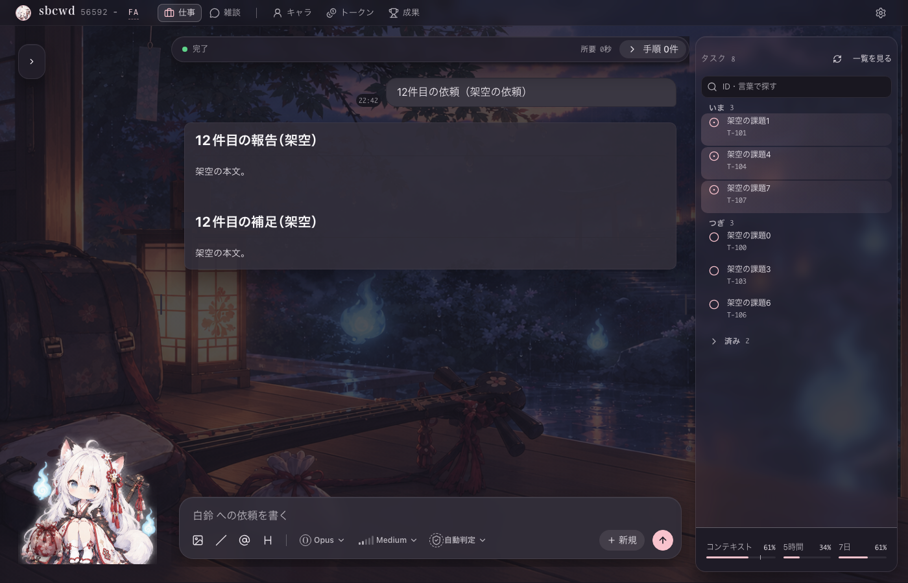
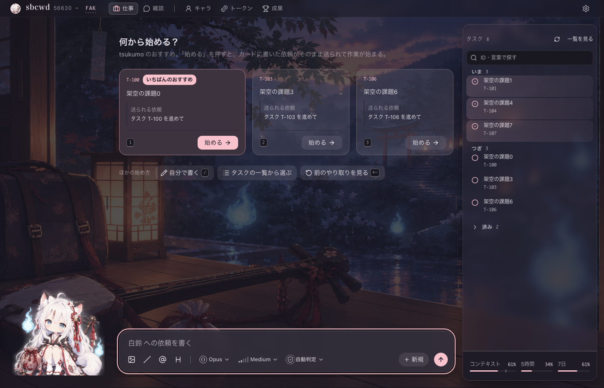

畳んだ形
やり取りが12件あるセッションで、列を畳んだ状態。
| 大きさ | 畳んだまま読めること | 開閉の口 | |
|---|---|---|---|
| 今の形 | 42×54 | なし（何の箱かは、押すか触れるまで分からない） | 開くと右端へ 168px 動く |
| 1 見出しの帯 | 214×50 | 名前・件数・前後へ移るキー | 開いても畳んでも同じ位置 |
| 2 現在地の帯 | 214×98 | 名前・何件目か・キー・見ているやり取りの題 | 開いても畳んでも同じ位置 |
| 3 小さい札 | 121×36 | 名前・件数 | 札の全体が口。開くと右端へ動く |
見出しの帯は、頭の行がそのまま残る
畳むと一覧だけが消え、頭の行は動かない。上下に畳むので、口の山形を左右から上下の向きに替える（開いたときの形で変わるのは、この山形の向きだけ）。
迎える場面（やり取りがまだ無い）
新しいセッションを開いた直後。今の形は、最初の依頼を送るまで左上に何も出ない。
| 大きさ | 出すもの | 最初の依頼を送ったとき | |
|---|---|---|---|
| 今の形 | なし | なし | 列が左上に現れる |
| 1 見出しの帯 | 214×50 | 名前と件数（0）。畳んだ形と同じ帯 | 帯の下へ1件目が伸びる。頭の行は動かない |
| 2 案内つき | 214×96 | 名前と、並ぶこと・キーの案内の2行 | 案内が1件目に入れ替わる |
迎える場面（続きのセッション）
前のやり取りが残るセッションを開き直した直後。今の形は、やり取りが12件あっても列ごと出ず、前のやり取りへは「ほかの始め方」の「前のやり取りを見る」からだけ入れる。案は、前のやり取りを最初から列に並べる（畳んでいた人には、畳んだ帯で出る）。
おすすめは、どちらも「見出しの帯」
- 頭の行を、やり取りの列のいちばん小さい形にする。畳んだとき・やり取りがまだ無いとき・やり取りが並んでいるときの3つが、同じ頭の行でつながる。
- 口が動かない。畳む・開くを続けて押しても、指を動かさずに済む。今の形と小さい札は、開くたびに口が列の右端へ動く。
- 畳んでも、件数とキーが読める。現在地の帯は題まで読めるが、高さが見出しの帯の2倍（98px）になる。
- 迎える場面で置き場が先に決まる。最初の依頼を送ったとき、列が現れるのではなく、帯の下へ伸びる。案内の文は、使い慣れたあとは読まない。
今の画面の実物の画
架空の疑似セッションを 2026-11-17 の画面で撮った。



